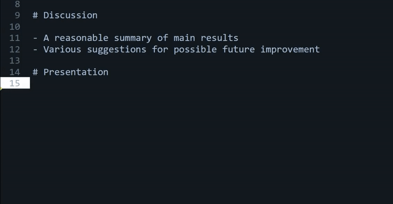

A SublimeText plugin for context-sensitive autocompletion suggestions
If you need to write free-text commentary to many similar documents - for example, marking students' papers, you probably often wished your previous comments could be re-used. After all, different students offer the same correct solutions and repeat the same mistakes that need to be pointed out in your feedback over and over.
To save time on writing such feedback and to ensure its consistency, I've written a plugin for SublimeText, a free text editor. It works similar to an autocompletion function in an internet search engine: when you start typing a keyword, previously written comments with that keyword will appear in an autocompletion menu.

The ST plugin has the following benefits over various similar tools:
-
Previously written comments can be re-used in a context-sensitive manner: if you are writing comments relative to a rubric (e.g., consisting of sections such as "Motivation", "Methodology", "Analysis", "Conclusions", etc), only those will be suggested that are relevant to the particular rubric section your cursor is currently in. For example, when commenting on the presentation style, only previous comments related to presentation will be suggested.
-
The automatically inserted text can be immediately post-edited to personalise the feedback.
-
SublimeText is a simple, non-intrusive editor that takes little space on the screen, so there is no need to switch between windows.
-
One can create and maintain multiple custom repositories of reusable comments - for example, for different subjects and different assignments.
-
It is free.
To install the plugin:
(1) Install Sublime Text.
(2) Download the plugin from github: it includes two files, MarkingFeedback.py and MarkingFeedback.sublime-settings.
(3) In SublimeText, select "Preferences" -> "Browser packages..." -> "User" and paste the two files into the User folder. Restart Sublime Text.
(4) Create a repository of comments you previously wrote: This should be a plain-text file, where the name of the rubric section appears on a separate line and is preceded with a "#", and past comments relating to this section appear below, one per line. See the example file included with the plugin. Save the file anywhere on your computer, e.g., under C:\Users\<username>\comments_repository.txt.
(5) In "MarkingFeedback.sublime-settings", specify the location of the file under "repository_path":
{
"repository_path": "C:\Users\<username>\comments_repository.txt"
}
To use the plugin:
(1) In a new plain-text document in ST, create the same marking rubric as in the comments repository file, where each section appears on a separate line, preceded by "#".
(2) Within a particular section, start typing a keyword and hit "tab" to bring up a context menu. Use the arrow keys + Enter to select a suggested comment.